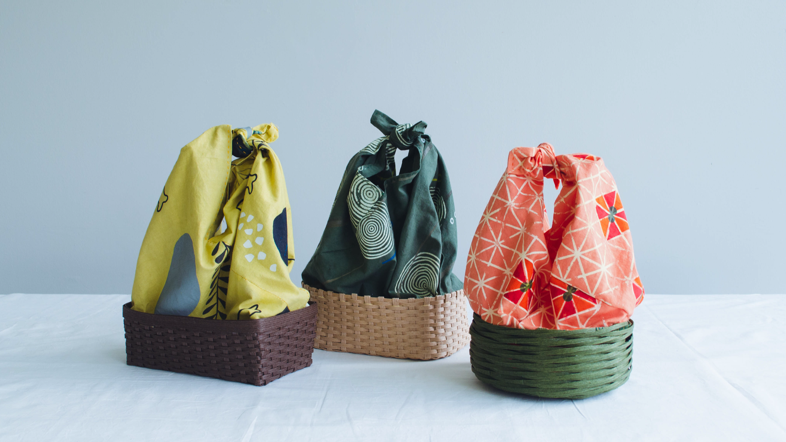
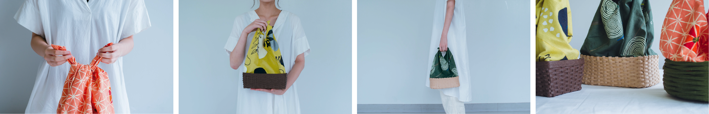
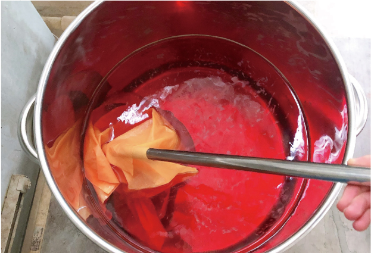
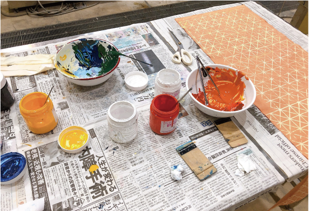
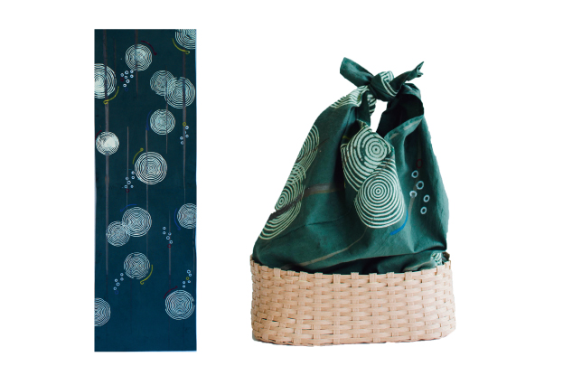
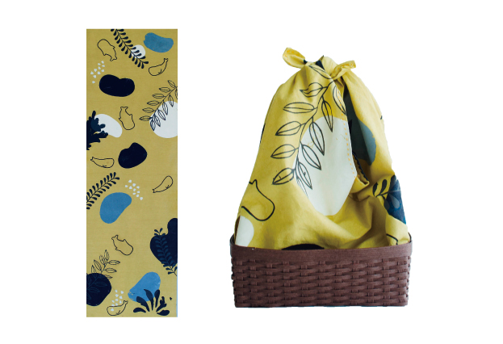
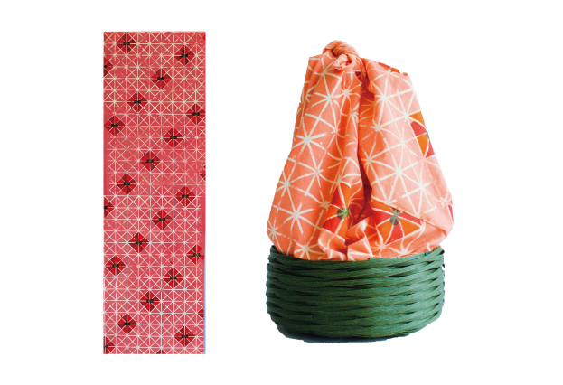

---Textile design / Goods---
和みと薫りを持ち運ぶ
日本に由来のある３つの香りをモチーフに制作した
完全ハンドメイドの和風カゴバック
◴ 2020/7/2-2020/8/20 ✎ Illustrator 染め シルクスクリーン

---Textile design / Goods---
和みと薫りを持ち運ぶ
日本に由来のある３つの香りをモチーフに制作した
完全ハンドメイドの和風カゴバック
◴ 2020/7/2-2020/8/20
>✎ Illustrator 染め シルクスクリーン
OUTCOME

PROCESS
私の名前 齋藤小薫
齋藤は平凡だが小薫は珍しい
両親が何故この感じを選んだのか、私には不思議だったが今ではとても気に入っている
薫…
どことなく、包み込んでくれるようなやさしさを感じる
日本人（和の人）である私の名前に使われたこの漢字をテーマにものを包む風呂敷のバッグを作った
何時間もじっくりと時間をかけて色を付けて、何枚ものスクリーンで模様をつけ、ひと針ずつ縫って形を作る
私のような作品


WORK
日本に由来のある３つの香りをモチーフに制作した和風のカゴバッグ
一枚の布と一本のクラフトバンドを準備し、
デザイン・染め・模様付け・カゴの製作・コーディネートまで行った

---檜---
森林を想像させる深い緑色に檜の特徴的な丸い年輪の形とお風呂の水面を連想させる円形の模様のデザイン。薄茶色のカゴとの組み合わせで見た目から森林を感じさせる。

---竜涎香---
上質な竜涎香の色味である琥珀色を背景に海を泳ぐマッコウクジラと竜涎香の歪な形の模様のデザイン。竜涎香とはマッコウクジラの腸内でできる塊状の香料のことである。

---金木犀---
幾何学的な形の花を前面に出した模様のデザイン。カゴとの組み合わせで金木犀の鮮やかなオレンジ色の花と緑力しい葉を表現している。